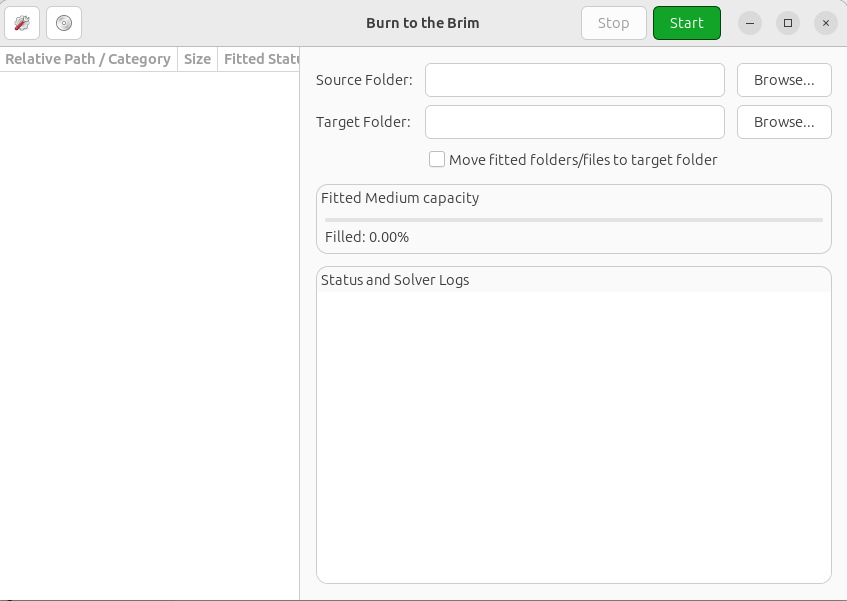
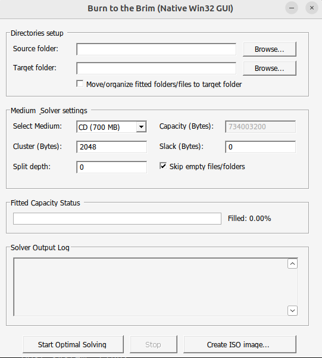

Latest Announcements
Keep track of major updates, version releases, and general news regarding Burn to the Brim.
Version 3.1.0 Released: BD/USB Storage & Multi-Volume Spanning Engine
Today we are thrilled to announce the immediate availability of **Burn to the Brim 3.1.0** for both Windows and Linux! This major feature update brings the most requested enhancements to the modern C++20 port: high-capacity media presets and a powerful multi-disk organization loop.
Iterative Multi-Volume Spanning: You can now pack exceptionally large directory trees that exceed the capacity of a single disc or flash drive. When "Span across multiple volumes" is checked, the backtracking solver iteratively runs on the remaining unselected files, organizing them automatically into separate subfolders like Volume_1, Volume_2, and so on.
High-Capacity Media Presets: We have added native, built-in capacity presets for Blu-ray discs (BD 25 GB and BD DL 50 GB) as well as USB Flash Drives (8 GB, 16 GB, 32 GB, and 64 GB). Sector calculations have been carefully updated to 4096-byte clusters for USB filesystems and 2048-byte sectors for optical media.
GUI Upgrades on Both Platforms: On Linux, the GTK 4 interface has been updated with the Spanning check, expanded media combos, and a completely rewritten nested result tree that displays files grouped neatly under volume parent nodes. On Windows, the native Win32 SDK GUI has been updated to prevent control overlap by dynamically expanding the main window height, updating the combobox dropdown size, and incorporating the new options.
Version 3.0.0 Released: Complete C++20 Redesign
We are extremely proud to announce that **Burn to the Brim 3.0.0** is officially available! We have completely retired the ancient Delphi codebase and rebuilt the entire core bin-packing engine from scratch using **modern C++20**.
BTTB now includes two dedicated graphical interfaces. On Linux, a modern GNOME-styled GTK 4 interface offers scrolling file tree listings and rich colored logs. On Windows, an ultra-lightweight (~160KB) native Win32 SDK GUI compiles statically to link strictly against pre-installed Windows DLLs, making it 100% compliant with GPL/LGPL open-source licensing.
Key features in this release include recursive split-depth scanning parameters, modern glob and regex rule groupings, thread-safe asynchronous solver execution, and fully-integrated ISO 9660 image creation natively supported on both platforms.


Legacy version 2.6.1 is out
Version 2.6.1 of the original Delphi branch is available. It features the classic tabbed results grid and multi-disk selections.
See what's new in version 2.6.1 →